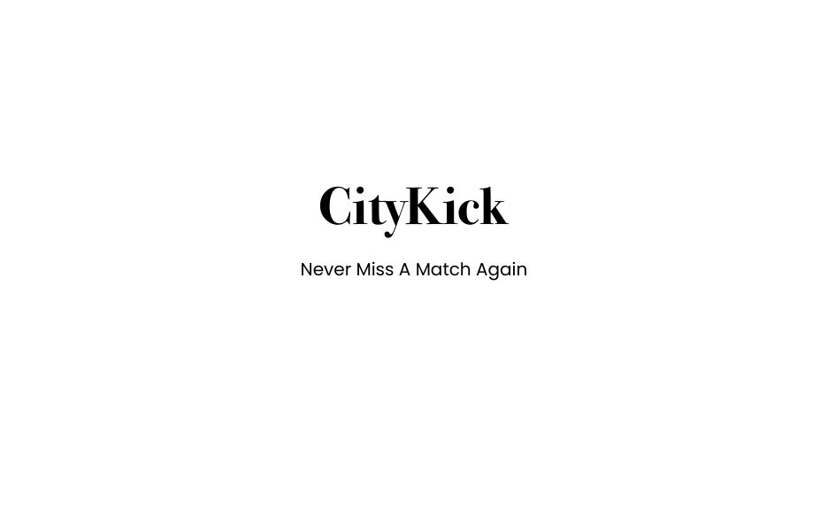
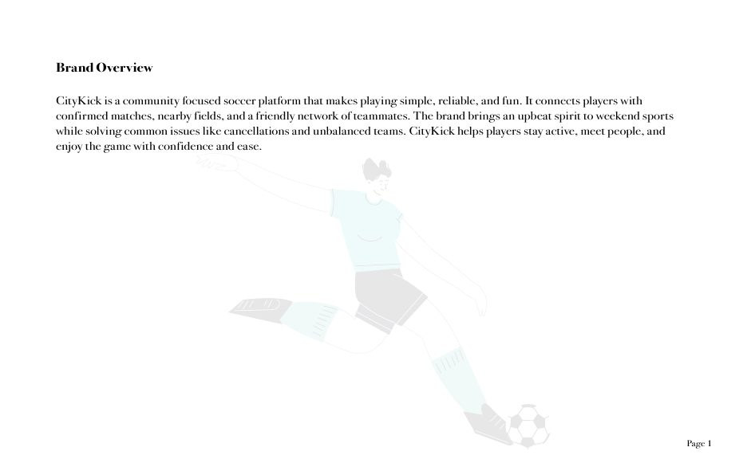
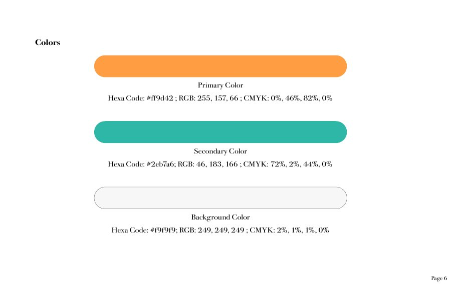
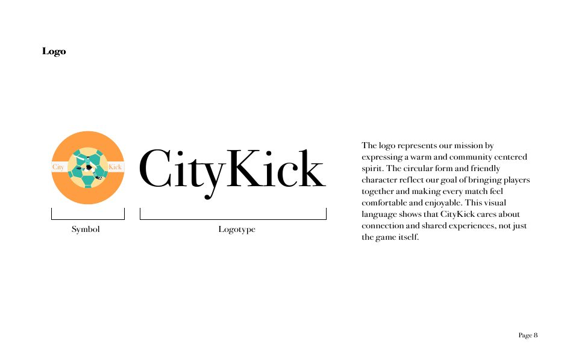
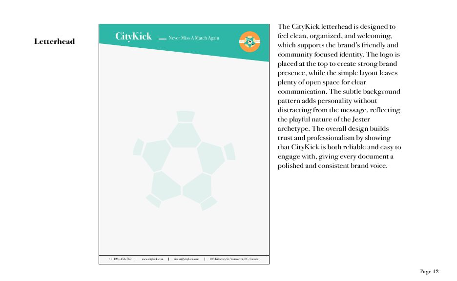
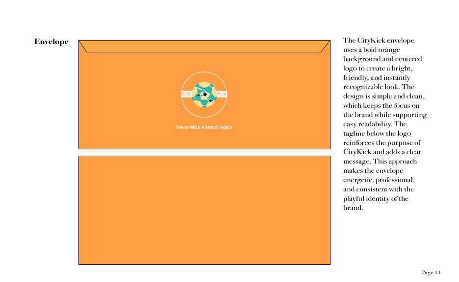
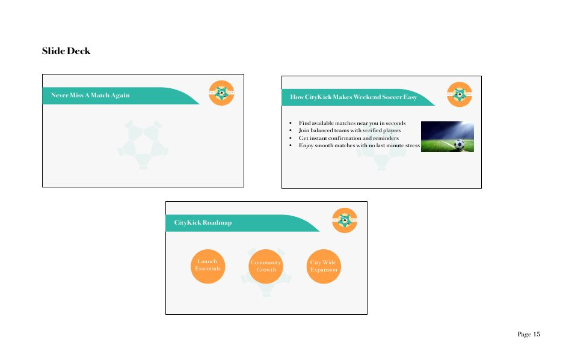
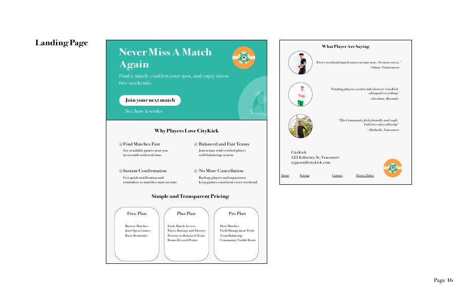

CityKick: never miss a match again
CityKick is a community soccer platform that makes playing simple, reliable, and fun. It connects players with confirmed matches, nearby fields, and a friendly network of teammates, solving the two problems that ruin weekend games: cancellations at the last minute and teams that are badly matched.
Strategy first
The identity started with research, not visuals. I built a target persona, a Vancouver player aged 26 who kept losing his weekends to cancelled casual games, then mapped CityKick against competitors like GoodRec and Urban Rec League, and connected each player frustration to a product answer in a value map.
The Jester brand archetype came out of that work. Players wanted weekend soccer to feel social and relaxed rather than competitive, so the brand needed energy and lightness instead of the hard edge most sports platforms reach for.


The visual system
A warm orange primary (#FF9D42) paired with a teal secondary (#2EB7A6) gives the brand approachability and energy, while Bodoni 72 brings clarity and a confident editorial voice. The circular soccer ball logo expresses a spirit centered on community, supported by strict usage rules that keep it consistent everywhere it appears.


The brand in use
The system was applied across stationery and digital touchpoints: a business card with a bold diagonal, letterhead and envelope, a slide deck template, and a landing page built to convert, with clear pricing tiers and social proof from real players.




